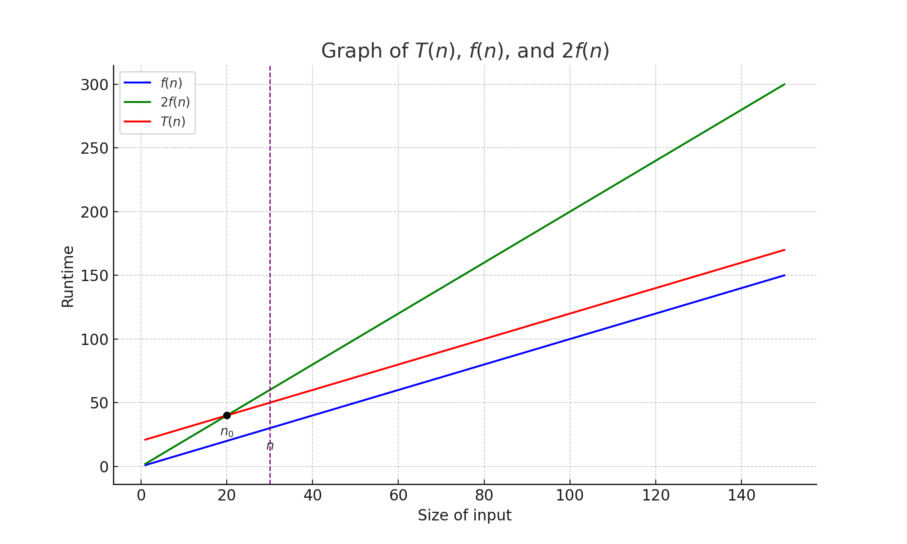
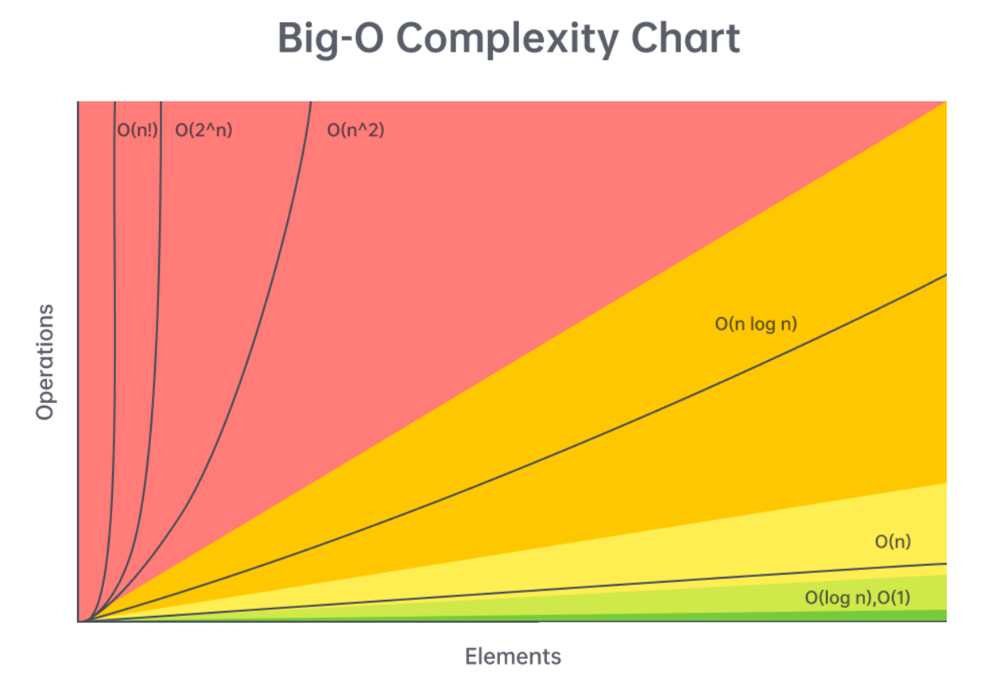

Generalized metric for measuring performance
Definition: T(n) = O(f(n)) if and only if there exists constants c > 0 and n0 > 0 such that T(n) ≤ c ⋅ f(n), ∀n ≥ n0. 
Characterstics
Time complexity (Big O) cheat sheet 
Constant
Logarithmic
Linear
Linearithmic
QuadraticExponentialFactorialjava.util.Collection
| Interface | Implementation |
|---|---|
| List | ArrayList, LinkedList |
| Set | HashSet, TreeSet |
| Map | HashMap, TreeMap |
clone()length, once an array is created, its
length is fixed and cannot be changed.int[] a = { 1, 2, 3, 4, 5 };
int[] b = { 1, 2, 3, 4, 5 };Array a and b are two instances, *
a == b checks reference/identity * a.equals(b)
of the Object class also checks reference/identity
Hexadecimal representation of hashcode of the memory address will be printed
System.out.println(c); // the same as c.toString()
System.out.println(c.toString());java.util.Arrays
Check equality: Arrays.equals(a, b)
Printing values:
System.out.print(Arrays.toString(c));
Sorting: Arrays.sort(c);
Copying
Arrays.copyOf(sA, length);
int[] d = Arrays.copyOf(a, 2);
// d = [1, 2]
int[] d = Arrays.copyOf(a, 10);
// d = [1, 2, 3, 4, 5, 0, 0, 0, 0, 0]System.arraycopy(sA, sI, dA, dI, length);
int[] e = new int[5];
System.arraycopy(a, 0, e, 0, 3);
// e = [1, 2, 3, 0, 0]clone()
int[] g = {1, 2, 3, 4, 5};
int[] h = g.clone();// Removes item at specified index and returns a new array;
// If not within bounds, return the same array
public static char[] delete(char[] data, int index) {
if (index >= 0 && index < data.length) {
char[] tmp = new char[data.length - 1];
System.arraycopy(data, 0, tmp, 0, index);
System.arraycopy(data, index + 1, tmp, index, data.length - index - 1);
return tmp;
}
return data;
}java.util.ArrayList
add(object): adds a new element to the end.add(index, object): inserts a new element at the
specified index.set(index, object): replaces an existing element at the
specified index with the new element.get(index): returns the element at the specified
index.remove(index): deletes the element at the specified
index.size(): returns the number of elements.Whenever an instance of ArrayList in Java is created then
by default the capacity of Arraylist is
10.
Expand when add() is called, but
DOES NOT shrink when delete().
// Initialize an arraylist with initial length of 0
List<Integer> numbers = new ArrayList<Integer>(0);
// Add numbers
for (int i = 0; i < 10; i++) numbers.add(i);
System.out.println(numbers);
// Delete numbers
for (int i = numbers.size() – 1; i >= 0; i--) {
if (numbers.get(i) % 2 == 0) numbers.remove(i);
}
System.out.println(numbers);trimToSize() method to free up the memory by shrinking size
to the number of elements.ArrayList used to implement the doubling-up policy; In Java 6, there has been a change to be (oldCapacity*3)/2 + 1.
List<Integer> numbers = new ArrayList<Integer>(4);
| Running time | # of elements | Array length | Allocated dollars | Cost
| Saved dollars | Balance | |————–|—————|————–|——————-|——|—————|———| | 1
| 1 | 4 | 3 | 1 | 2 | 2 | | 1 | 2 | 4 | 3 | 1 | 2 | 4 | | 1 | 3 | 4 | 3
| 1 | 2 | 6 | | 1 | 4 | 4 | 3 | 1 | 2 | 8 | | 5 |
5 | 8 | 3 | 5 |-2 | 6 | | 1 | 6 | 8 |
3 | 1 | 2 | 10 | | 1 | 7 | 8 | 3 | 1 | 2 | 12 | | 1 | 8 | 8 | 3 | 1 | 2
| 12 | | 9 | 9 | 16 |
3 | 9 |-6 | 6 |
add(E e) method has amortized constant
timepublic static int binarySearch(int[] data, int key) {
int l = 0;
int r = data.length - 1;
int mid;
while (true) {
if (l > r) {
return -1;
}
mid = (l + r)/2; // Overflow issue
if (data[mid] == key) {
return mid;
}
if (data[mid] < key) {
l = mid + 1;
} else {
r = mid - 1;
}
}
}| Bits | Unsigned value | Signed value (Two’s complement) | One’s Complement | Two’s Complement |
|---|---|---|---|---|
| 000 | 0 | 0 | 111 | 000 |
| 001 | 1 | 1 | 110 | 111 |
| 010 | 2 | 2 | 101 | 110 |
| 011 | 3 | 3 | 100 | 101 |
| 100 | 4 | -4 | 011 | 100 |
| 101 | 5 | -3 | 010 | 011 |
| 110 | 6 | -2 | 001 | 010 |
| 111 | 7 | -1 | 000 | 001 |
mid = l + (r - l)/2; instead of
mid = (l + r)/2;